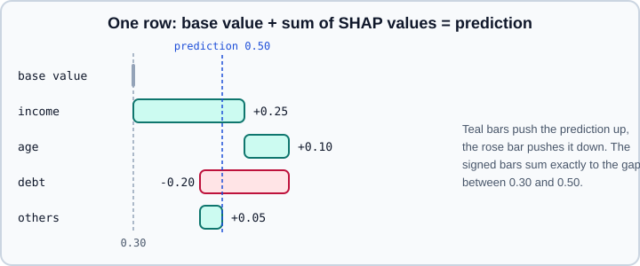

Interpretability & Explainability
|
This content was generated with the assistance of AI and should be verified against the official documentation before being relied on in production. |
A model that scores well is not necessarily a model that can be trusted. Interpretability is the degree to which a person can understand why a model produces its predictions. Explainability is the set of techniques that produce an account of a prediction after the fact, for models that are not understandable by inspection. The account is always a simplification, so the first skill is to know what question each technique answers and what it cannot answer.
This page targets Python 3.13, scikit-learn 1.9, SHAP 0.54 and Captum 0.9 with PyTorch 2.15 (Captum requires a recent PyTorch and works on eager models). Examples were run on Python 3.13 with scikit-learn 1.9.1, SHAP 0.54.1, Captum 0.9.0 and PyTorch 2.15 (CPU) on 2026-11-01. The scikit-learn tools are described in depth in Permutation Importance & Partial Dependence; the evaluation habits that explanations depend on are in Model Evaluation & Validation.
Questions an explanation can answer
Explanations differ in scope and in what they take as the object of study.
| Scope | Question | Typical tools |
|---|---|---|
Global |
Which inputs matter to the model overall, and how does the prediction change as an input moves? |
Coefficients, tree structure, permutation importance, partial dependence, mean absolute SHAP value |
Local |
Why did the model give this prediction for this one row, image or text? |
SHAP values for one row, LIME, ICE curves, counterfactual examples, integrated gradients |
Model-specific |
Uses the internal structure (tree paths, gradients, attention) |
TreeSHAP, saliency, integrated gradients, DeepLIFT |
Model-agnostic |
Treats the model as a black box that maps inputs to outputs |
Permutation importance, partial dependence, KernelSHAP, LIME |
An explanation also has an audience. A data scientist debugging a leak needs a feature ranking. A loan applicant needs reasons they can act on. A regulator needs evidence that the model was tested for the right things (see Fairness & Responsible ML). One technique rarely serves all three.
Start with models you can read
The most reliable explanation is a model that needs none. A linear or logistic regression exposes one coefficient per feature, and a shallow decision tree exposes its rules. Fit one as a baseline even when you expect to deploy something else: the gap in accuracy tells you what the complexity buys, and if it is small, the simple model usually wins on cost, debugging and trust.
Coefficients are readable only when the features are comparable. Standardise numeric inputs before comparing magnitudes, and remember that a coefficient measures the effect of a feature given the other features, so two correlated features can split or flip a shared effect.
from sklearn.datasets import load_breast_cancer
from sklearn.linear_model import LogisticRegression
from sklearn.model_selection import train_test_split
from sklearn.pipeline import make_pipeline
from sklearn.preprocessing import StandardScaler
from sklearn.tree import DecisionTreeClassifier, export_text
data = load_breast_cancer(as_frame=True)
X_train, X_test, y_train, y_test = train_test_split(
data.data, data.target, stratify=data.target, random_state=0
)
# 1. A linear model: one signed weight per standardised feature
logit = make_pipeline(StandardScaler(), LogisticRegression(max_iter=1000))
logit.fit(X_train, y_train)
coefs = logit[-1].coef_[0]
top = sorted(zip(data.feature_names, coefs), key=lambda p: abs(p[1]), reverse=True)[:5]
for name, value in top:
print(f"{name:25s} {value:+.2f}")
print("logistic accuracy:", round(logit.score(X_test, y_test), 3))
# 2. A depth-3 tree: the whole model fits on a screen
tree = DecisionTreeClassifier(max_depth=3, random_state=0).fit(X_train, y_train)
print(export_text(tree, feature_names=list(data.feature_names)))
print("tree accuracy:", round(tree.score(X_test, y_test), 3))The two models show different kinds of readability. The coefficient list is a global, additive account (each feature contributes independently on the log-odds scale). The tree text is a set of rules that can be followed for any single row. Both are faithful, because the explanation is the model. The techniques below are approximations of a model that is not directly readable, so they carry an extra question: how faithful is the approximation?
Permutation importance
Permutation importance measures how much a score drops when one feature column is shuffled, which breaks its relationship with the target while keeping its distribution. It is model-agnostic and works with any fitted estimator, including a whole pipeline.
Compute it on held-out data. On the training set, a model that overfits can rely on features that carry only noise, and permuting them still hurts the training score, so the ranking rewards memorisation. The impurity-based feature_importances_ of a forest is computed on training data and is biased towards high-cardinality features, which is why it is a poor default.
from sklearn.datasets import load_breast_cancer
from sklearn.ensemble import RandomForestClassifier
from sklearn.inspection import permutation_importance
from sklearn.model_selection import train_test_split
data = load_breast_cancer(as_frame=True)
X_train, X_test, y_train, y_test = train_test_split(
data.data, data.target, stratify=data.target, random_state=0
)
forest = RandomForestClassifier(n_estimators=200, random_state=0).fit(X_train, y_train)
result = permutation_importance(
forest, X_test, y_test, scoring="roc_auc", n_repeats=20, random_state=0, n_jobs=-1
)
order = result.importances_mean.argsort()[::-1][:5]
for i in order:
print(f"{data.feature_names[i]:25s} {result.importances_mean[i]:.4f} +/- {result.importances_std[i]:.4f}")An importance that is within one standard deviation of zero means shuffling the column does not measurably hurt the score on this test set, not that the feature is irrelevant in general. When two features are strongly correlated, shuffling one leaves the other to compensate, so both can look unimportant. Group correlated columns and permute them together, or drop one of each pair, before reading the ranking.
Partial dependence and ICE
A partial dependence plot (PDP) averages the model’s prediction over the data while one feature (or two) is forced to a grid of values. An individual conditional expectation (ICE) curve does the same for a single row, so a set of ICE curves shows whether the average hides different behaviour in different rows. If the thin curves fan out in different directions while the average is flat, the feature has interactions the average erased.
Scikit-learn provides PartialDependenceDisplay.from_estimator with kind="both" for PDP plus ICE; the full treatment, categorical features and the recursion versus brute methods are in Permutation Importance & Partial Dependence. Both plots assume the chosen feature can be moved independently of the others, which is false for correlated features: the grid includes combinations that never occur, such as a 5 m² flat with 12 rooms, and the model’s behaviour there is extrapolation. Accumulated local effects (ALE) plots address this by averaging local changes within bins of the feature, and are available in third-party packages.
SHAP values
SHAP (SHapley Additive exPlanations) assigns each feature a contribution to one prediction, using the Shapley value from cooperative game theory. For a model \( f \) and a set of features \( F \), the contribution of feature \( i \) is
\[ \phi_i = \sum_{S \subseteq F \setminus {i}} \frac{|S|!\,(|F| - |S| - 1)!}{|F|!} \left[ f_{S \cup {i}}(x_{S \cup {i}}) - f_S(x_S) \right] \]
where \( f_S \) is the model’s expected output when only the features in \( S \) are known and the others are marginalised out. The values satisfy local accuracy: the base value (the average prediction over a background set) plus the sum of the \( \phi_i \) equals the prediction for the row. The figure shows this for one hypothetical row.

Computing the sum exactly takes \( 2^{|F|} \) model evaluations, so SHAP offers estimators with different trade-offs.
| Explainer | Works with | Notes |
|---|---|---|
|
Tree ensembles such as XGBoost, LightGBM, CatBoost, scikit-learn forests and |
Exact and fast (polynomial time) for the tree’s conditional or interventional expectation |
|
Linear models |
Closed form given the feature covariance |
|
Neural networks in PyTorch and TensorFlow |
Approximations that depend on the backend and layer support; check the supported versions before relying on them |
|
Any function |
Model-agnostic and slow; needs a small background set and a limited number of rows |
|
Any model |
Picks an algorithm automatically from the model type |
HistGradientBoostingClassifier is not a supported TreeExplainer model in all SHAP versions; use shap.Explainer(model.predict, background) for it, or train the boosted model with XGBoost, LightGBM or GradientBoostingClassifier.
import numpy as np
import shap
from sklearn.datasets import fetch_california_housing
from sklearn.ensemble import GradientBoostingRegressor
from sklearn.model_selection import train_test_split
data = fetch_california_housing(as_frame=True)
X_train, X_test, y_train, y_test = train_test_split(
data.data, data.target, test_size=2000, random_state=0
)
model = GradientBoostingRegressor(n_estimators=200, max_depth=3, random_state=0).fit(X_train, y_train)
explainer = shap.TreeExplainer(model)
sv = explainer(X_test.iloc[:500]) # shap.Explanation: values, base_values, data
# Local accuracy: base value + sum of contributions == prediction
reconstructed = sv.base_values + sv.values.sum(axis=1)
print("max reconstruction error:", np.abs(reconstructed - model.predict(X_test.iloc[:500])).max())
# Global view: mean absolute contribution per feature
mean_abs = np.abs(sv.values).mean(axis=0)
for name, value in sorted(zip(X_test.columns, mean_abs), key=lambda p: -p[1])[:3]:
print(f"{name:12s} {value:.3f}")
shap.plots.waterfall(sv[0]) # why this one prediction
shap.plots.beeswarm(sv) # direction and spread for every featureSource: SHAP: TreeExplainer and SHAP documentation
The reconstruction error should be close to zero (floating-point precision), which is a useful sanity check that you are reading values on the same scale as the prediction. For classifiers the scale of the values can be the raw margin (log-odds) instead of the probability; check the explainer’s model_output option before reporting values to a non-technical reader.
Interpretation rules for SHAP:
-
The values explain the model, not the world. A large contribution for
incomesays the model uses income, not that changing a person’s income would change the outcome. -
The base value and the attributions depend on the background (reference) data. Choose it to match the population you want to compare against, and report it.
-
With correlated features, the interventional estimate (
feature_perturbation="interventional", the default when you pass background data) evaluates the model on combinations that never occur, while the path-dependent estimate follows the tree’s own cover statistics and can give credit to a feature the model does not directly use. Neither is wrong; they answer different questions. -
A single waterfall is an anecdote. Aggregate over many rows before drawing a global conclusion, and watch for interactions with
shap.TreeExplainer.shap_interaction_values.
LIME
LIME (Local Interpretable Model-agnostic Explanations) perturbs one input, queries the black box on the perturbed copies, and fits a small weighted linear model around the point. The coefficients of that surrogate are the explanation. It is simple, works on tabular, text and image data, and helps to build intuition. Its weaknesses are the sensitivity to the perturbation distribution and the kernel width, the randomness between runs, and a lack of guarantees such as SHAP’s additivity. The reference package (lime) has seen little maintenance activity in recent years, so for new work prefer SHAP for tabular models and gradient methods for networks, and treat LIME as a historical or comparison technique.
Gradient-based attributions with Captum
For a differentiable network, the gradient of the output with respect to the input says how sensitive the prediction is to each input element. Saliency uses the absolute gradient. It is cheap but noisy and can saturate: where a ReLU or sigmoid is flat the gradient is zero even though the input matters. Integrated gradients (Sundararajan et al., 2017) fixes this by integrating the gradient along a straight path from a baseline \( x' \) to the input \( x \):
\[ \mathrm{IG}_i(x) = (x_i - x'i) \int{0}^{1} \frac{\partial f(x' + \alpha (x - x'))}{\partial x_i} \, d\alpha \]
The attributions satisfy completeness: they sum to \( f(x) - f(x') \). The baseline matters as much as the method. An all-zero image is black, which makes dark pixels look unimportant; a blurred image, noise or a dataset mean are common alternatives, and averaging over several baselines is more robust.
Captum is PyTorch’s library for these methods. It works on eager nn.Module models and takes tensors, so run it before exporting or compiling. The example attributes a small classifier’s prediction to its four input features.
import torch
from torch import nn
from captum.attr import IntegratedGradients, Saliency
torch.manual_seed(0)
model = nn.Sequential(nn.Linear(4, 16), nn.ReLU(), nn.Linear(16, 3))
model.eval()
x = torch.randn(8, 4, requires_grad=True)
baseline = torch.zeros_like(x)
ig = IntegratedGradients(model)
attr, delta = ig.attribute(x, baselines=baseline, target=1, n_steps=100, return_convergence_delta=True)
print("IG shape:", tuple(attr.shape))
print("completeness error:", delta.abs().max().item()) # should be small
sal = Saliency(model).attribute(x, target=1, abs=True)
print("saliency shape:", tuple(sal.shape))
# Completeness check: sum of attributions equals f(x) - f(baseline) for the target class
gap = model(x)[:, 1] - model(baseline)[:, 1]
print(torch.allclose(attr.sum(dim=1), gap, atol=1e-2))Source: Captum: introduction and Captum: Integrated Gradients API
Captum also provides layer attributions (LayerGradCam for CNNs, LayerIntegratedGradients for embedding layers in text models), neuron-level methods and NoiseTunnel for smoothing noisy gradients. Captum Insights, an interactive visual dashboard that shipped with older releases, has been retired, so use the library’s attribution outputs with Matplotlib instead. For image models, overlay the attribution on the input and check that it highlights the object rather than a watermark, border or background; for text models, attribute to the embedding layer and aggregate per token.
Attention is not an explanation by itself
Transformer attention weights are easy to extract and easy to plot, which makes them tempting as explanations. Research (Jain and Wallace, 2019; Wiegreffe and Pinter, 2019) shows that attention weights often do not agree with gradient-based importance, and that very different attention patterns can produce the same output, so attention is at best one input to an explanation and not a faithful account of why the model decided. Use attribution methods for claims about what drove a prediction, and treat attention maps as a description of where the model routed information. Architecture background is in Transformer Architecture, and explanations of language-model outputs raise further limits covered in Hallucinations and Limitations.
Glass-box models and InterpretML
Instead of explaining a black box afterwards, you can train a model that is accurate and readable by design. InterpretML’s Explainable Boosting Machine (EBM) is a generalised additive model with pairwise interactions, trained by cyclic gradient boosting, so each feature has its own shape function that can be plotted and edited. On many tabular problems its accuracy is close to that of boosted trees, and it provides exact global and local explanations. Fit it with ExplainableBoostingClassifier().fit(X, y) and open the explanation with show(ebm.explain_global()). InterpretML (package interpret, version 0.7) also bundles wrappers for SHAP, LIME and partial dependence, so one dashboard can compare several explainers.
Pitfalls
-
Explaining a bad model. If the model has a data leak, every explanation will faithfully report the leak. A feature that dominates by an implausible margin is a reason to audit the pipeline, not to publish a chart.
-
Reading explanations as causes. Attributions describe the model’s dependence on inputs. Acting on them (raise the income to get the loan) assumes causal structure the model never learned. Use causal methods when you need interventions.
-
Correlated and redundant features. Importance can be split, hidden or invented. Check the correlation matrix and group features.
-
Explaining on training data. Prefer a held-out set for importance, and a representative background for SHAP.
-
Instability. Two models with the same accuracy (the Rashomon effect) can have different explanations, and one model can have different explanations after retraining with another seed. Report intervals (permutation repeats, bootstrap) and compare across seeds.
-
Explanations that look good but are unfaithful. Saliency maps can be nearly identical for a trained and a randomly initialised network (Adebayo et al., 2018). Run a sanity check: randomise the weights and confirm the explanation changes.
-
Disclosing too much. Detailed explanations can leak training data or help an attacker reverse-engineer a model. Decide what to expose to whom; see Sensitive Information and Hidden Context.
-
Mistaking a tool for compliance. Rights to meaningful information about automated decisions and documentation duties are legal requirements that an attribution plot does not satisfy by itself; see EU AI Act and Fairness & Responsible ML.
Where older books and tutorials are outdated
| Older advice (checked 2026-10-30) | Current practice |
|---|---|
Use the random forest’s |
Compute permutation importance on held-out data; impurity importance is biased towards high-cardinality features and measured on training data |
Use LIME as the standard local explainer |
SHAP is the common default for tabular models; the |
Visualise with Captum Insights |
Captum Insights is retired; plot attributions yourself |
Attention weights explain a transformer |
Attention is not a faithful explanation by itself; use attribution methods |
Use the Python 2 era |
Use |
Related pages
-
Classic Algorithms Overview and Tabular Data & Gradient Boosting for the models these tools most often explain.
-
Convolutional Neural Networks and Attention & Transformers for the networks that gradient methods target.
-
Experiment Tracking & MLOps to log explanations next to the run that produced them.
-
Responsible AI Practices for governance around explanations.